全国海洋航行器设计与制作大赛¶
C4智能导航赛道操作手册¶
1 平台简介¶
1.1平台描述¶
SpaceR-USV 是一款先进的智能无人船虚拟仿真训练平台，该平台由基于Unity的虚拟三维仿真引擎、基于Simulink的无人船运动模型和基于ROS的无人船航控系统三部分组成。平台基于Unity引擎进行航行场景设计和传感器数据获取，提供高逼真的视觉和物理仿真，为无人船的导航训练提供有效的模拟平台；基于Simulink搭建无人船运动数学模型，为避障算法提供符合物理规律的运动学和动力学约束，考虑风、浪、流三种环境因素的影响，在运动数学模型中加入对应干扰力的计算，使算法仿真更贴合实际；基于ROS的无人船航控系统旨在实现无人船的自主导航、任务执行和操作控制。该系统利用ROS提供的一系列工具和库，实现无人船的感知、决策和控制功能，使其能够在复杂的环境中自主航行和执行任务。
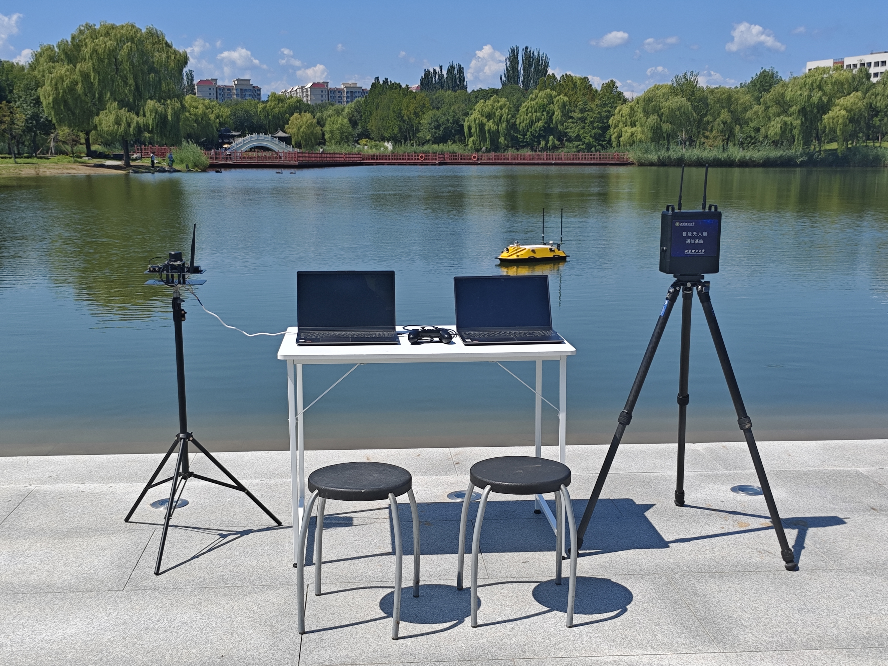
1.2平台框架¶
智能无人船虚拟仿真训练平台框架主要涉及六个模块：
- ● 环境交互显示模块：提供水域地形、环境条件和船舶模型号等信息。
- ● 无人艇模型：包括三维几何和物理运动模型，用于模拟无人艇的行为。
- ● 环境感知模块：通过激光雷达、视觉相机等传感器收集环境数据。
- ● 运动控制模：块负责无人艇的电机和舵机控制。
- ● ROS数据通信模块：在各模块之间传递数据，并负责信息处理，确保系统协调工作。
- ● 避障算法模块：使用强化学习（如PPO、TD3）和监督学习进行路径规划和障碍物规避，提升无人艇的自主导航能力。
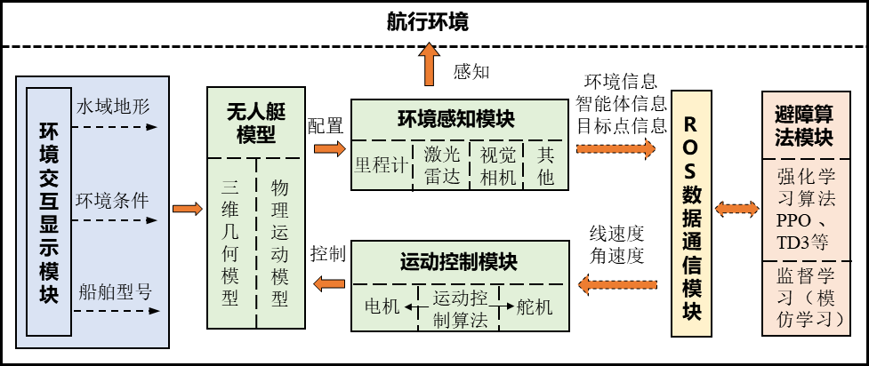
2 无人船硬件介绍¶
2.1 无人船船体参数¶
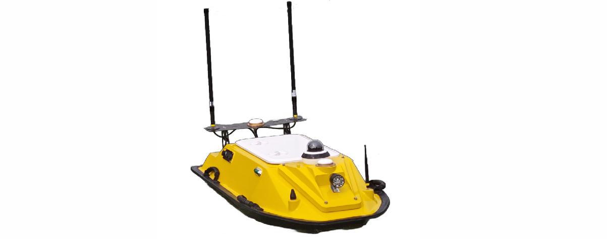
| 参数名称 | 参数值 |
|---|---|
| 船长 | 1.3 m |
| 型宽 | 0.64 m |
| 吃水深度 | 18 cm |
| 最高航速 | 1.8 m/s（使用船自带遥控的极限速度是2.4 m/s） |
| 船体材料 | 玻璃纤维增强材料 |
| 动力系统 | 2x 喷泵推进器 |
| 定向巡航速度 | 定速巡航速度在1-1.5 m/s时，效果较好，低于1 m/s时，电机推力会降的比较低。 |
| 定速巡航速度 | 1.4 m/s |
| 续航时间 | 满功率大约2 H，限定功率测试一般可达到 4-5H |
| 通信距离 | 大约2 km |
| 转弯半径 | 油门100%，方向50%时，转向半径5m左右 |
| 最大转向角速度 | 45 °/s |
3 部署流程¶
3.1 总体流程框架¶
本系统的完整部署流程由六个关键步骤依次串联完成，各步骤须按序执行，确保各组件通信正常后方可启动算法训练。整体流程如下图所示：
┌─────────────────────────────────────────────────────────────────┐
│ 系统部署总体流程 │
└─────────────────────────────────────────────────────────────────┘
① 打开虚拟机，等待 ROS2 自启动
│
▼
② 打开 MATLAB，启动 Simulink 水动力模型
│
▼
③ 启动具身智能仿真平台，配置 IP 和端口号
│
▼
④ 重启具身智能仿真平台，切换为【算法训练】模式
│
▼
⑤ 设置config参数，运行 main 函数
│
▼
⑥ 在具身智能仿真平台中点击【开始训练】
注意：各步骤之间存在依赖关系，请严格按照序号顺序依次操作，切勿跳步或乱序执行。
3.2 压缩包文件简介¶
智能导航C4-2026文件夹解压缩之后里面会有4个主要文件夹。
1、 ros环境文件夹有ros2设置完备的虚拟机，只需导入即可。
2、 Model文件夹提供无人船的水动力simulink模型。
3、 EmBoUnity文件夹提供具身智能仿真平台，供智能体仿真使用。
4、 NavAlg文件夹提供导航避障算法，供智能体训练使用。
3.3 关键步骤详解¶
步骤一：打开虚拟机，自启动 ROS2¶
打开解压文件夹：智能导航C4-2026\ros环境，双击 Ubuntu 64 位.ovf 文件，将其导入 VMware 虚拟机，设置好虚拟机名称与存储路径后启动虚拟机。启动后在VMware Workstation界面点击虚拟机-设置-网络适配器，右边网络连接选择为自定义-VMnet8(NAT模式)。
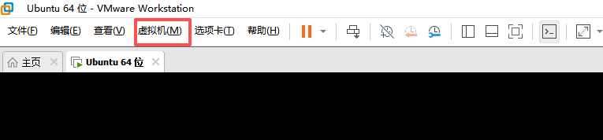
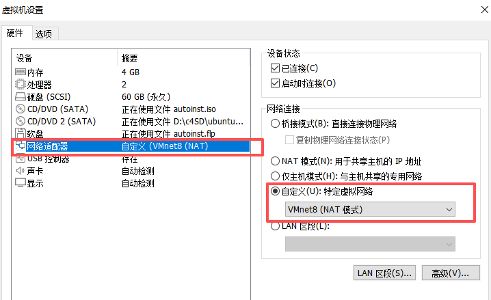
登录用户名为 c4，密码为 c4，回车进入虚拟机主界面。进入主界面后等待约 2 分钟，系统将自动启动 ROS2 容器，无需手动执行任何命令。
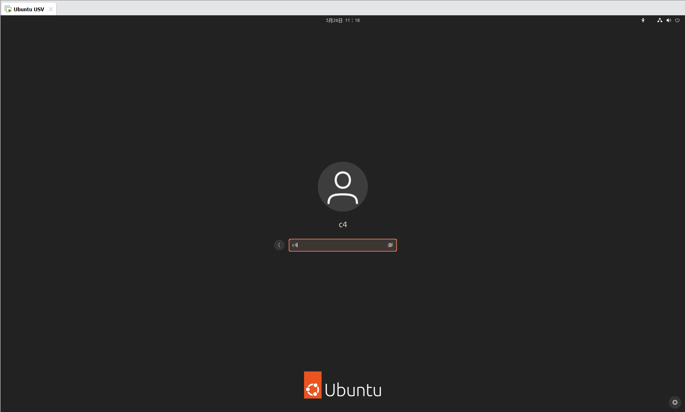
提示：虚拟机启动后请记录当前虚拟机的 IP 地址，后续在具身智能仿真平台网络设置中需要填写该地址作为 ROS2 控制器 IP。
步骤二：打开 MATLAB，启动 Simulink 水动力模型¶
双击打开 MATLAB，在命令行中输入路径切换指令：cd 路径名称，进入文件夹：智能导航C4-2026\Model\Model\C4_2026。随后在命令行输入以下指令，等待 Simulink 自动启动并运行无人船水动力模型：
start_simulation
Simulink 模型启动后，无人船的运动数学模型（包含风、浪、流干扰力解算）即开始运行，为具身智能仿真平台提供符合物理规律的动力学数据支撑。
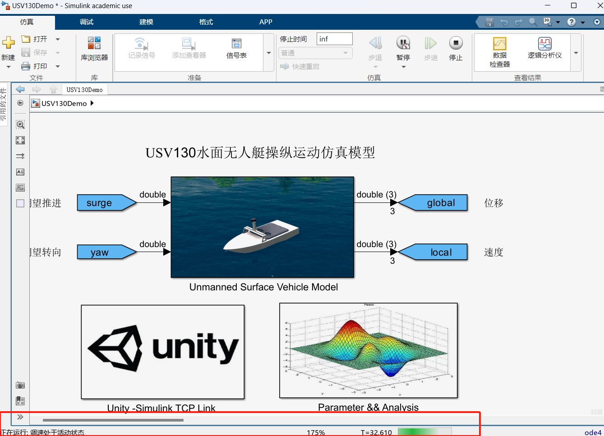
提示：请确保 MATLAB 版本兼容，且 Simulink 模型已正常弹出窗口，方可进行下一步。
步骤三：启动具身智能仿真平台，配置 IP 和端口号¶
进入文件夹 智能导航C4-2026\EmboUnity，双击打开 EmboUnity.exe，在登录界面输入账号 Bit01、密码 123456 后登录平台（需在联网环境下运行）。进入平台后，点击菜单中的【系统设置】→【网络设置】，按以下规则填写网络参数并点击保存：
| 参数项 | 配置值 |
|---|---|
| 模型 IP | 127.0.0.1 |
| 模型接收端口 | 10804 |
| 模型发送端口 | 10805 |
| 控制器 IP | 虚拟机的实际 IP |
| 控制器端口 | 10000 |
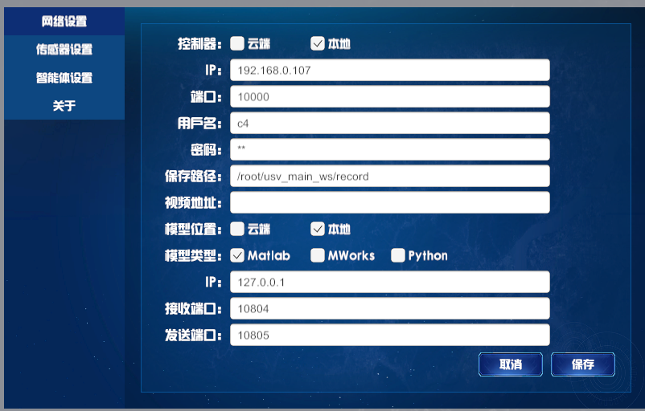
在系统设置中点击传感器设置，打开虚拟激光雷达，再点击关于，复制设备唯一标识，后续操作五会用到。
注意：控制器 IP 需填写步骤一中虚拟机的实际 IP 地址，请勿填写固定值。
步骤四：重启具身智能仿真平台，切换为算法训练模式¶
完成 IP 与端口设置并保存后，重启具身智能仿真平台使网络配置生效。重启完成后观察界面左上角：ROS2 IP 旁的两条连接状态横线应显示为一蓝一绿，右侧基础状态栏中"船舶模型"应显示通讯正常，说明与 Simulink 模型及 ROS2 控制器的连接均已建立成功。
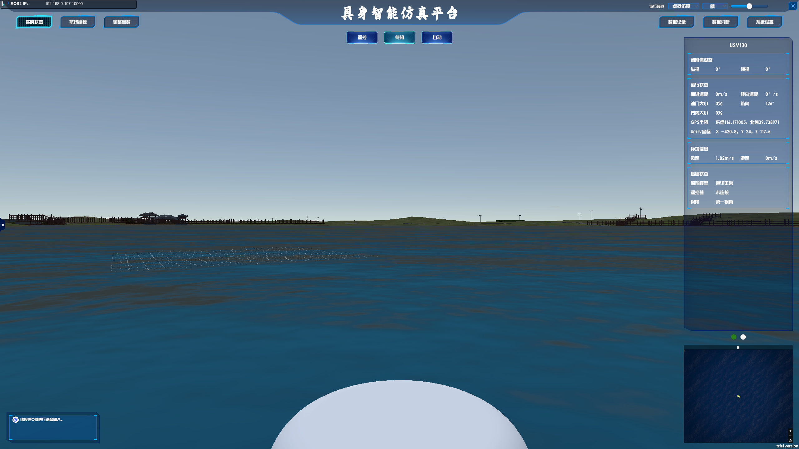
确认连接正常后，在平台右上角的【运行模式】中选择切换为【算法训练】模式。切换成功后，可根据需要按住 Shift 键在场景内点击以新增障碍物，按住 Ctrl 键点击可设置目标点位置。
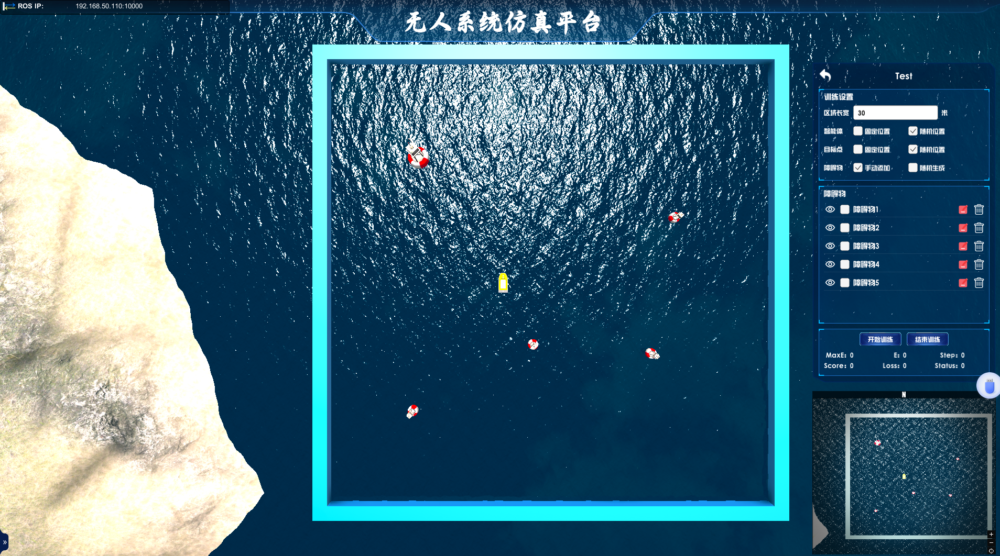
提示：若连接横线显示异常（均为灰色或红色），请检查虚拟机是否正常运行、IP 填写是否正确，并重新保存网络配置后再次重启。
步骤五：设置config参数，运行 main 函数¶
在路径智能导航C4-2026\NavAlg\NavAlg\config.json中设置host为虚拟机IP地址，port端口为9090，deviceId为步骤三中复制的设备唯一标识。
打开以下路径所在的文件夹：
智能导航C4-2026\NavAlg\NavAlg\usvlib4ros\usvlib4ros
在该目录中找到算法主入口文件，运行 main 函数以启动强化学习算法进程。算法启动后将自动通过 ROS2 与仿真平台建立通信连接，订阅虚拟传感器的 Topic 数据，等待来自具身智能仿真平台的心跳信号（虚拟传感器数据流）触发训练流程。代码正常运行应在控制台有如下提示：
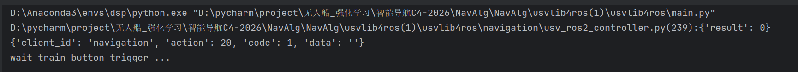
提示：运行前请确保算法中连接的 ROS2 服务端 Host 地址与虚拟机 IP 一致，以及设备号deviceId与具身智能仿真平台系统设置-关于-设备唯一标识一致。
步骤六：在具身智能仿真平台中点击【开始训练】¶
当算法端检测到虚拟传感器数据已正常读入（通过 ROS 订阅服务收到数据），说明算法进程与仿真平台的通信链路已建立完成。此时回到具身智能仿真平台界面，点击【开始训练】按钮，即可正式启动强化学习训练流程。
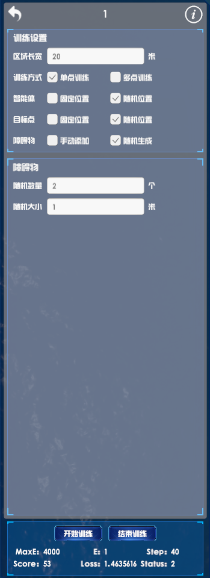
训练启动后，平台将根据预设的航线、障碍物布局和智能体参数，持续进行算法迭代与仿真推演。可在实时状态界面中观察无人船的姿态、速度、轨迹等运行状态信息。
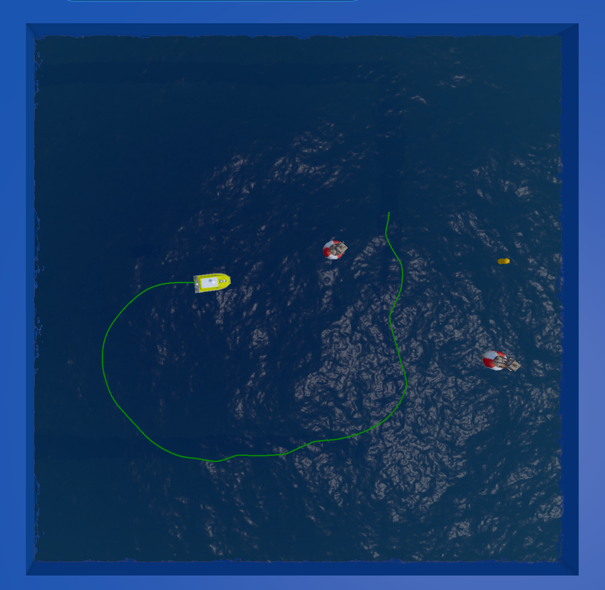
提示：若点击【开始训练】后无响应，请检查算法端是否已成功运行且已检测到传感器数据输入，确保通信链路建立后再重新点击。